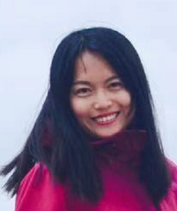

Rui Gao
Postdoctoral Researcher
Department of Electrical Engineering and Automation, Aalto University.
Address: Room F322, Rakentajanaukio 2c, Espoo, Finland
Email: firstname dot lastname at aalto dot fi
|

|
Background
I am a postdoctoral researcher in the research group of sensor informatics and medical technology. I got my Ph.D. degree from the Department of Electrical Engineering and Automation, Aalto University in 2020, under supervision of Professor Simo Särkkä. Before that, I received my B.Sc. and M.Sc. degrees from Northeastern University of China (NEU) in 2010 and 2012.
Teaching
Research Interest
Sparse representation, optimization methods, state estimation, image fusion and deblurring.
Preprints
-
Rui Gao, Simo Särkkä, Ruben Claveria-Vega, Simon Godsill. Autonomous Tracking and State Estimation with Generalised Group Lasso. [arXiv]
Journal Articles
-
Rui Gao, Filip Tronarp, Simo Särkkä. Variable Splitting Methods for Constrained State Estimation in Partially Observed Markov Processes. IEEE Signal Processing Letters, Volume 27, pages 1305--1309, 2020. [arXiv]
-
Rui Gao, Filip Tronarp, Simo Särkkä. Iterated Extended Kalman Smoother-based Variable Splitting for L1-Regularized State Estimation. IEEE Transactions on Signal Processing, Volume 67, Issue 19, pages 5078--5092, 2019. [arXiv]
-
Rui Gao, Sergiy A Vorobyov, Hong Zhao. Image Fusion With Cosparse Analysis Operator. IEEE Signal Processing Letters, Volume 24, Issue 7, pages 943--947, Jul. 2017. [pdf]
Conference Articles
-
Rui Gao, Simo Särkkä. Augmented Sigma-Point Lagrangian Splitting Method for Sparse Nonlinear State Estimation. IEEE 28th European Signal Processing Conference (EUSIPCO), Amsterdam, The Netherlands, Jan. 2021, pp. 2090--2094. [PDF]
-
Rui Gao, Filip Tronarp, Zheng Zhao, Simo Särkkä. Regularized state estimation and parameter learning via augmented Lagrangian Kalman smoother method. 2019 IEEE 29th International Workshop on Machine Learning for Signal Processing (MLSP), Pittsburgh, PA, USA, Oct. 2019. [PDF]
-
Rui Gao, Filip Tronarp, Simo Särkkä. Combined Analysis-L1 and Total Variation ADMM with Applications to MEG Brain Imaging and Signal Reconstruction. 2018 26th European Signal Processing Conference (EUSIPCO), Rome, Italy, Sept. 2018, pp. 1930--1934. [PDF]
-
Rui Gao, Sergiy A Vorobyov, Hong Zhao. Multi-focus image fusion via coupled dictionary training. 2016 IEEE International Conference on Acoustics, Speech and Signal Processing (ICASSP). [PDF]